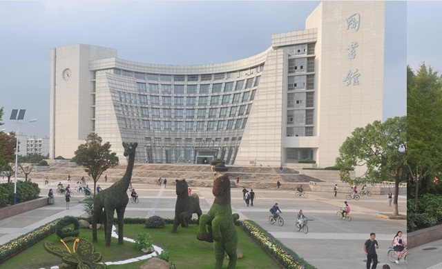

The purpose of the workshop is to stimulate research and foster interaction between researchers interested in matrix theory, operator theory, and their applications. Hopefully, the informal workshop atmosphere will ensure the exchange of ideas from different research areas.
International Research Center for Tensor and Matrix Theory (IRCTMT), Shanghai University.
Department of Mathematics , School of Sciences, Shanghai University.
Gaoyuan Discipline of Shanghai ¡ª¡ª Mathematics, Shanghai City, China.